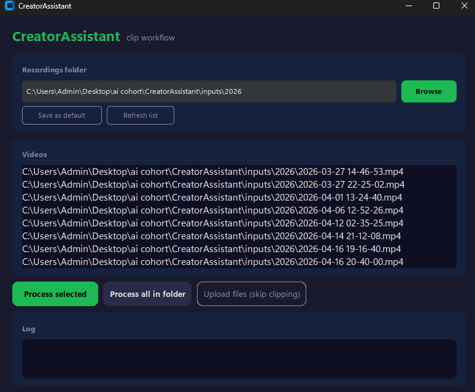
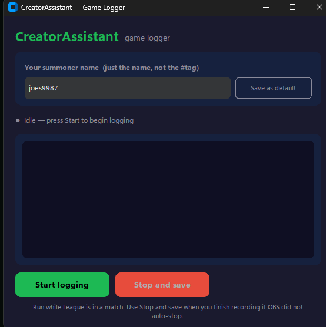

CreatorAssistant
A free Windows desktop app that turns League of Legends gameplay into vertical clips and publishes them to YouTube Shorts, TikTok, and Instagram Reels.
What It Does
CreatorAssistant is a desktop tool for League of Legends creators. Record your matches with OBS, point CreatorAssistant at the file, and it will detect highlight moments (kills, team fights), cut them into vertical 9:16 clips, and optionally publish them to your YouTube, TikTok, and Instagram accounts. You approve every post.
Not a League player? You can also skip detection entirely and use CreatorAssistant as a one-click multi-platform uploader for any video file.
The App


How It Works
- Record — capture your League games with OBS or any recorder.
- Detect — CreatorAssistant finds highlights using live kill data from Riot's API or AI-based audio and motion analysis on the recording.
- Extract — clips are cut and converted to 9:16 vertical, ready for short-form platforms.
- Publish — sign in to YouTube, TikTok, and Instagram once, then upload selected clips with one click.
- Direct upload — already have clips? Skip detection and upload any video file straight to all three platforms.
TikTok Integration
CreatorAssistant uses TikTok's Login Kit and Content Posting API. When you enable TikTok in the app and start an upload, your default browser opens TikTok's authorization page so you can sign in and grant access. Once authorized, the app uploads the clip you selected to your account.
The scopes requested are:
- user.info.basic — read your profile (open id, display name) so the app can confirm which account it is posting to.
- video.upload — send a clip to your account as a draft for you to review and post.
- video.publish — directly post a clip when you choose to.
All video processing — detection, cutting, vertical conversion — runs on your machine. The only thing sent to TikTok is the final clip you chose to upload.
Privacy and Security
CreatorAssistant does not collect analytics, telemetry, or personal data. OAuth tokens for YouTube, TikTok, and Instagram are stored locally on your machine and never leave it. There is no CreatorAssistant account or server.
Support
Questions, bug reports, or feature requests:
- Email: singhjoe57@gmail.com
- GitHub Issues: github.com/joes9987/CreatorAssistant/issues